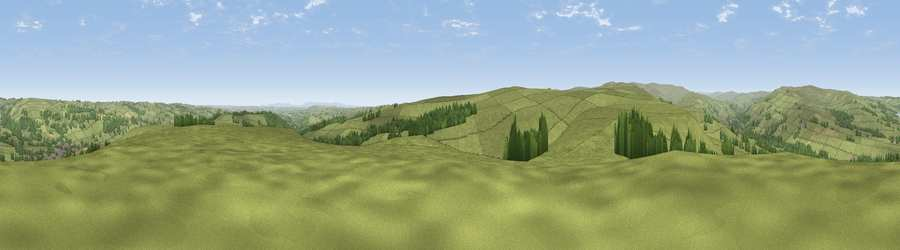

Viewpoint near Wolsingham
#10452 in England · top 20% of its area beats it · near WolsinghamWhere it is
The exact computed spot (NZ 06575 35025). Click the marker for map links.
The view, rendered

A 360° render of this exact spot computed from the terrain model, tree cover and land cover — summer colours, afternoon light, calibrated against photographs of famous viewpoints. Real trees, hedges and buildings will differ in detail.
The panorama
Grey silhouette: terrain skyline in each direction (720 bearings, Earth curvature and refraction included). Dashed green: skyline with trees (+15 m) and buildings (+8 m) as obstacles. Blue strip: how far the ground is visible on each bearing.
Where the view opens
Wedge length = distance to the farthest visible ground on that bearing (vegetation-aware). Rings at 10, 25 and 50 km.
What fills the view
85% grassland · 12% woodland · 2% cropland ·
Angular shares of the visible panorama (visual magnitude), not map area. Landscape diversity 0.22 (0–1 Shannon).
Key numbers
More beautiful places nearby
The staircase of upgrades: each row has a higher view potential than everything closer. Driving times are estimates from straight-line distance, calibrated against real road routing — check an actual route before setting out.
| Place | Direction | Drive | Score |
|---|---|---|---|
| Viewpoint near Wolsingham | SSW · 2 km | ~5 min | 63.0 |
| Viewpoint near Frosterley | WSW · 4 km | ~9 min | 63.5 |
| Viewpoint near Frosterley | NW · 6 km | ~12 min | 66.4 |
| Five Pikes | WSW · 6 km | ~12 min | 66.9 |
| Viewpoint near Frosterley | NW · 6 km | ~13 min | 68.3 |
| Viewpoint near Frosterley | WSW · 8 km | ~15 min | 70.6 |
| Collier Law | NW · 8 km | ~17 min | 71.7 |
| Viewpoint near Eggleston | SSW · 12 km | ~22 min | 76.0 |
54.71020, -1.89947 · source: screening · position refined by local search. Computed location — check access rights before visiting.